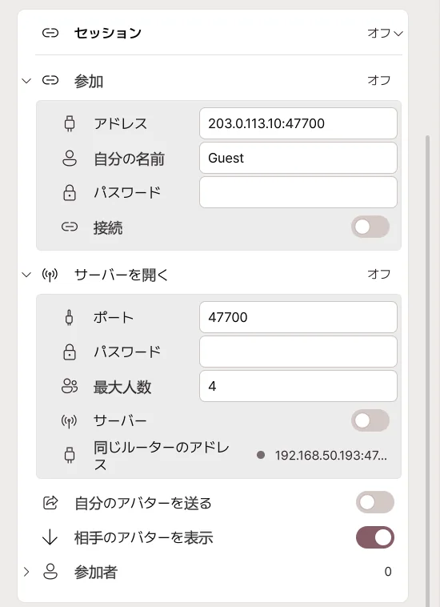
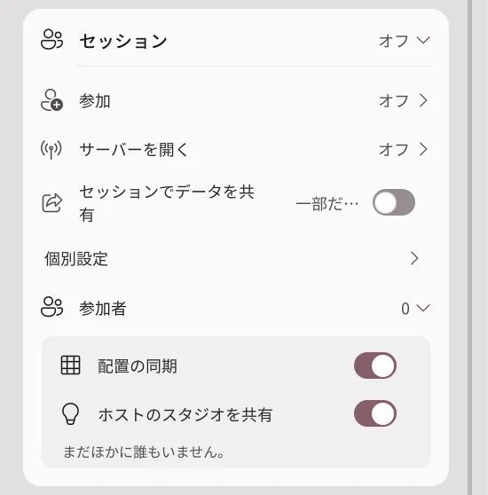

リモートコラボ配信
異なる PC で動くアバターを一つのスタジオに集めて配信できます。参加者全員が Pro と、リモートセッションに対応する同じバージョンを使用してください。
配信 → 接続のいちばん下にあるセッションカードを開きます。ホストがサーバーを開き、ほかの人は案内されたアドレスに参加します。
ホスト：部屋を開く

- サーバーを開くを展開します。
- 自分の名前、パスワード、最大人数を設定します。
- サーバースイッチをオンにします。
- 接続先のアドレスとパスワードを参加者に伝えます。
| 設定 | 内容 |
|---|---|
| ポート | 接続に使用する番号。初期値は 47700 です。 |
| 最大人数 | ホストを含む人数の上限です。 |
| パスワード | 参加時に必要なパスワードです。 |
| サーバースイッチ | 部屋を開閉します。閉じると参加者も切断されます。 |
| 自分のアドレス | ホスト PC のローカルアドレスです。別の家から参加する人にはグローバル IP とポートを伝えます。 |
接続できない場合は接続の問題を確認してください。
参加者：部屋に入る
- 参加を展開します。
- ホストから受け取ったアドレス:ポートを入力します。
- 自分の名前とパスワードを入力します。
- 接続スイッチをオンにします。最初に入るときに表示される入室のご案内を読み、一度だけ同意します。
- 参加者一覧にお互いの名前が表示されるか確認します。
退出するときは接続をオフにします。
アバターの表示と配置

| 設定 | 変更すると |
|---|---|
| セッションでデータを共有 | アバターのデータをセッションの参加者とやり取りする、ひとつのスイッチです。初期状態はオフです。 |
| 個別設定 | 開くと、相手のアバターを表示・自分のアバターを送るを個別に設定できます。 |
| 代替アバター | 相手のモデルを利用できない場合に表示するローカルモデルを選びます。 |
| 配置同期 | ホストの配置と参加者ごとの位置調整を反映します。 |
| 配置ロック | ホストが参加者による位置・回転・大きさの変更を制限します。 |
| 位置・回転・大きさ | 選択中の参加者の配置を変更します。 |
| 再検索 | すでに所有している同一の VRM をローカルフォルダーから探し直します。 |
相手の位置を自分で調整しても、変更が自分の画面だけに反映される場合があります。全員で同じ配置を使うには配置同期を利用してください。
アバターを送信する前に
アバター・衣装・小物の送信が認められるかは、それぞれの原作者の利用規約によります。Pro の購入やデータの暗号化は、共有の許可にはなりません。再配布が禁止されている VRM は送信しません。
転送が認められない場合は送信スイッチをオフにし、代替アバターを使ってください。コンテンツの利用条件も参照してください。
接続できない場合
まず、ホストのサーバーがオンか、アドレス・ポート・パスワードが正しいか、参加者全員のバージョンが同じか確認します。
別の家の友達が接続できない — ポート転送
ホストのルーターで、外部からの接続をホスト PC に転送します。
- ホスト PC の IPv4 アドレスを確認します。
- ルーター管理画面でポート転送／ポートマッピングを開きます。
- 以下の規則を追加します。
| 設定 | 値 |
|---|---|
| 内部 IP | ホスト PC の IPv4 アドレス |
| 外部ポート | 47700 |
| 内部ポート | 47700 |
| プロトコル | TCP と UDP の両方 |
アプリ側でポートを変更した場合は外部・内部も同じ番号に合わせます。外部の参加者は、ホストのルーターのグローバル IP とポートで接続します。192.168 で始まるローカルアドレスには別の家から直接接続できません。
アドレスとポートは正しいのに応答がない — ファイアウォール
ホスト PC の Windows ファイアウォールで Avatar Live の通信を許可します。手動で規則を作る場合、セッション用ポートのTCP・UDP 受信通信を許可してください。ファイアウォール全体を無効にする必要はありません。
PC の内部 IP が変わったら転送先も変更します。ルーターのDHCP アドレス予約を使うと IP が変わりにくくなります。
ポート転送とファイアウォールを設定してもつながらない — ルーター・回線
ルーターの WAN アドレスがプライベート IP の場合や、通信事業者が CGNAT を使用している場合、手元のルーターだけの設定では外部から接続できないことがあります。上流のルーターか、プロバイダーのグローバル IP 提供を確認してください。
同じ Wi-Fi からグローバル IP を試すと、ルーターの NAT ループバック非対応で失敗することがあります。別のネットワークから試してください。
セッションデータについて
- 参加者の一人の PC がホストサーバーになります。Avatar Live の中央サーバーにアバターを保存する仕組みではありません。
- 同意のもと送信されるアバターデータは AES-256-GCM で暗号化され、ホストと受信 PC にセッション専用の一時キャッシュとして保存されます。
- セッション終了・退出時には一時キャッシュを削除し、復号鍵を破棄します。
- 暗号化キャッシュだけから元のアバターファイルを抽出・復元することはできません。
- リアルタイムの姿勢・表情・制御メッセージはアバターファイルとは別に送られ、同じ終端間暗号化は適用されません。
- ファイル転送の暗号化によってアバター・衣装・小物の再配布権が生じるわけではありません。